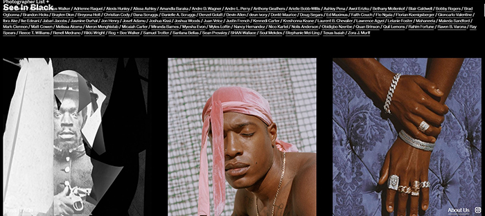
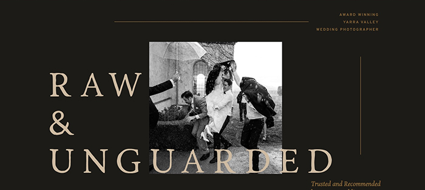
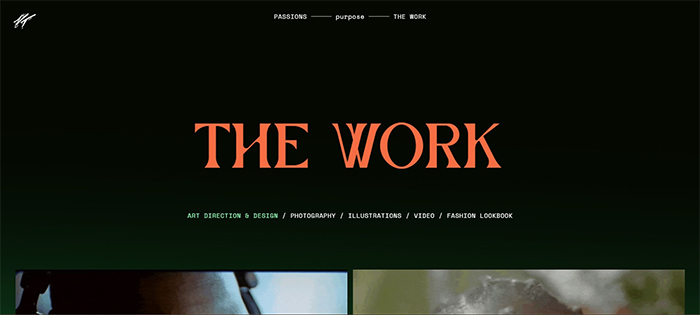

Similar Websites
For my project, I plan to make a virtual exhibition that highlights photography with black women as the subjects. My goal is to showcase black women's beauty. I found many websites that are similar in style and topic to my project, like seeinblack.com, rickliston.com, and nohameen.com.
Analysis
The see in black website is the most similar website to my project's. The website showcases the work of black photographers to increase visibility for black people and black artists. The website's color scheme is cool, as it's background is just plain black. Usually this is something you'd want to avoid, but for this website, I think it works well as a design decision because it makes a statement that aligns with their message: pure black without any changes.
The next website does not have to do with my project content-wise, but is the most similar to my initial design vision. I wanted to do some sort of very dark grey or low saturated brown background, with a large serif font header and photography image. I think the color scheme works really well here and that the website is very cohesive as a whole, but some of the placement of text is a bit weird and perhaps bad for readability underneath the hero image.
Lastly, we have Nohameen.com, which is a portfolio website. I really like the design, look, and interface of this website. I think the interface is raelly cool, and the main page is unique because it doesn't have a normal design practice for navigation, but utilizes affordability well so that the user will still navigate to the right place and make sense of the page. I will admit that the page was a little confusing to use at first, but I got it pretty quickly after clicking around (due to limited options for things to click on). Also, on the "purpose" page, the font is quite small so there is a bit of a readability issue.
Shaping my Project
These websites help me shape my project because it gives me reference to base my design on. I realized I want the photography images to be the main focus, so that the emphasis is on the subjects of the photos. I want to really showcase the beauty of each individual. These websites helped me to see how I might emphasize the photos and people through the composition.